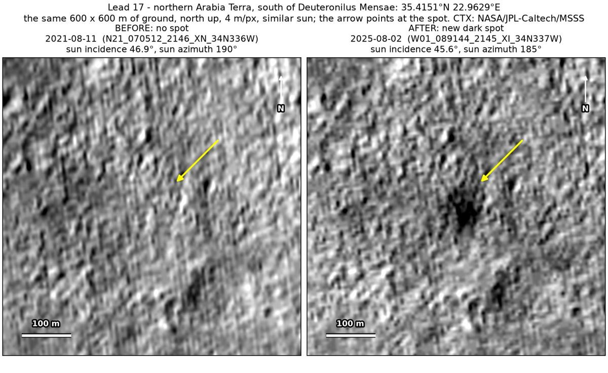
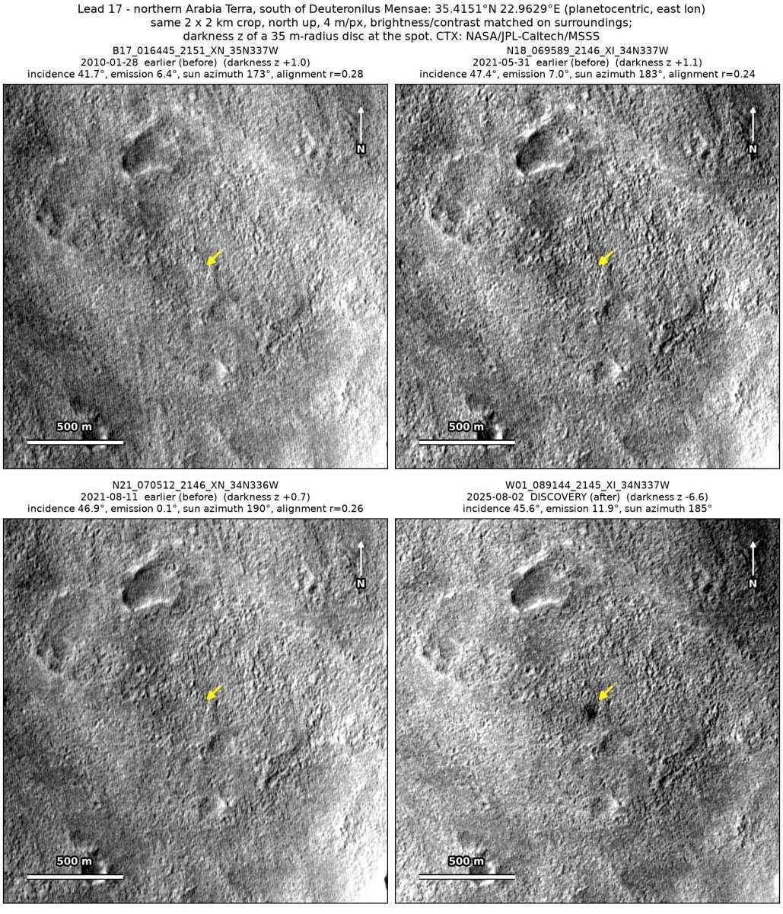
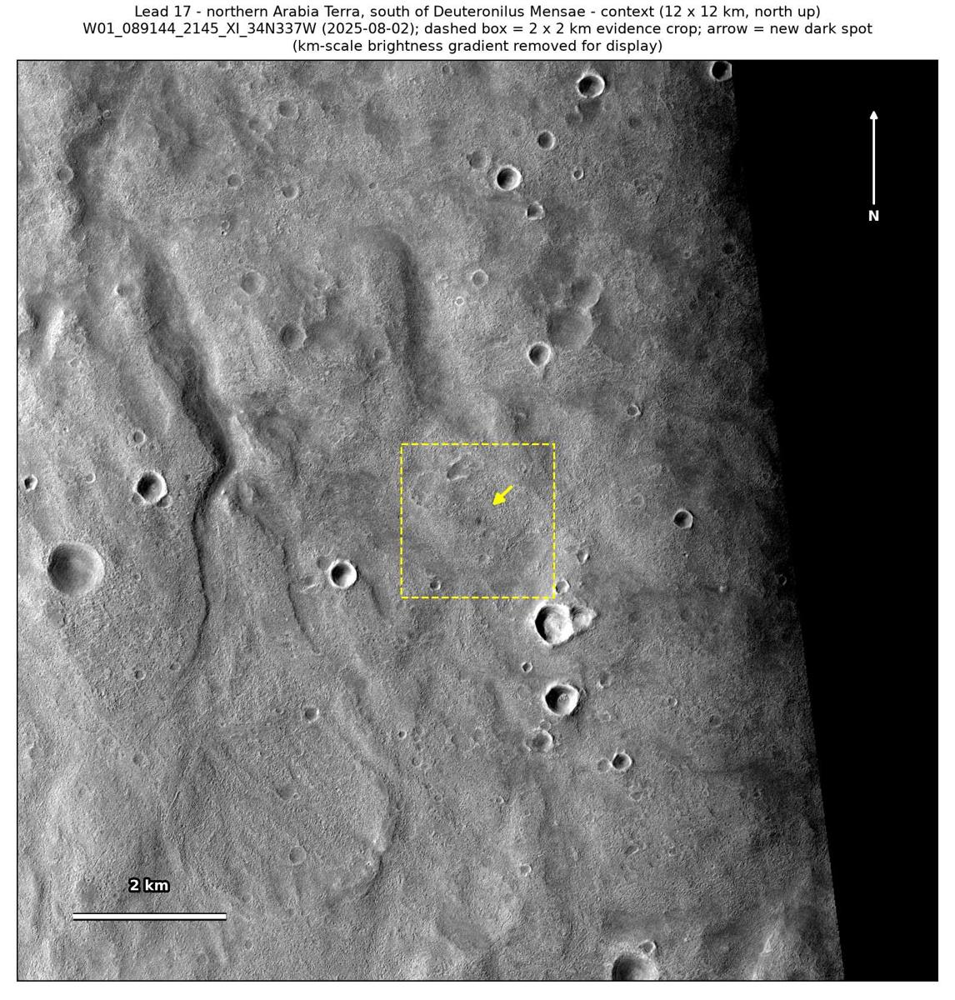

Professor of Mathematics
Paata Ivanisvili
Department of Mathematics, University of California, Irvine

← Possible new impact sites on Mars
Candidate 17: Plains in northern Arabia Terra, south of Deuteronilus Mensae
Promising · roughly 55%

What changed. An irregular dark spot 60 to 70 m across, with a darker core, appeared on cratered plains of northern Arabia Terra between August 2021 and August 2025. So far it is seen in only one CTX image.
Why it may be a new impact. Three earlier images, from January 2010, May 2021 and August 2021, were taken with the sun at nearly the same height as in the August 2025 image and show nothing there, while a dark feature 207 m away shows in all three, so they would have shown the spot. A dark spot with a darker core appearing on plains fits the blast zone of a small new crater.
- Location
- 35.415° N, 22.963° E
- Absent
- 28 January 2010, 31 May 2021 and 11 August 2021
- Present
- 2 August 2025
- Size
- Irregular dark spot 60 to 70 m across, with a darker core
- Confidence
- Promising candidate: roughly 55% likely to be a new impact.
- Caveat
- Only one image shows it so far, though a flaw in that image is unlikely, as the spot is a smooth, irregular patch rather than a line or block. A change in the brightness of the ground caused by wind is possible. No image from the high-resolution HiRISE camera covers it; the nearest ends 26.4 km away. Like every candidate here, it is unconfirmed: see the caveat.

